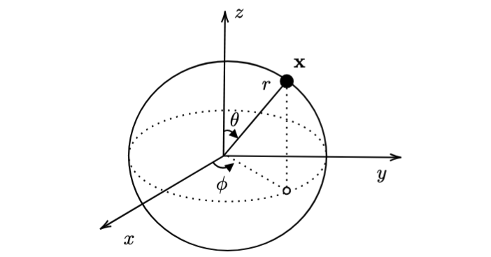
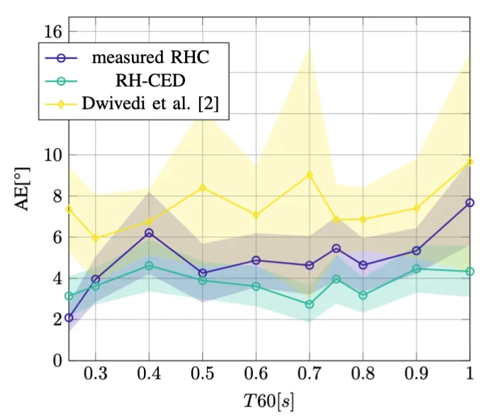
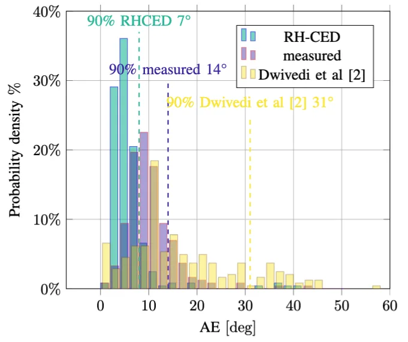

Abstract
Relative Harmonic Coefficients (RHCs) are a promising descriptor for direction-of-arrival estimation, but they are vulnerable to noise and reverberation. RHC-ED is a convolutional encoder-decoder that processes noisy, reverberant RHCs and restores their ideal properties by suppressing unwanted artifacts. Experiments across diverse acoustic conditions show lower estimation errors than recent state-of-the-art methods, especially with first-order spherical harmonics.
Method
RHCs are the ratio between spherical harmonic coefficients and the zeroth-order coefficient. In anechoic conditions they depend only on the source direction, but reverberation breaks this property. RHC-ED learns to map reverberant first-order RHCs back to their anechoic counterparts with an MSE loss, then the DOA is estimated from the restored coefficients.
Input
6 × 256 × 10 tensor: real and imaginary parts of β1,−1, β1,0, β1,1 over 256 bins and 10 frames.
Encoder–decoder
Five convolutional layers, a linear bottleneck (512, dropout 0.3) and five transposed convolutions.
Training data
SMIR-generated RIRs for a 32-channel Eigenmike in rooms of 4–8 × 5–10 × 3–5 m, T60 0.25–1.0 s, SNR 5–60 dB, LibriSpeech speech.
Continuous DOA
Unlike classification approaches with 5° classes, the direction is estimated continuously from the restored RHCs.

Results
On synthetic data RHC-ED outperforms both unprocessed RHCs and classification-based methods for every reverberation time. On real measurements from the METU SPARG Eigenmike dataset, the 90% confidence interval of the angular error drops to 7°, a 50% reduction with respect to unprocessed RHCs and 77% with respect to the method of Dwivedi et al.


Cite this work
G. Greco, S. Messana, M. Pezzoli, M. Cobos, and F. Antonacci, “Dereverberation of Relative Harmonic Coefficients via CNNs for Acoustic Source DOA Estimation,” in Proc. 33rd European Signal Processing Conference (EUSIPCO), Palermo, 2025. doi: 10.23919/EUSIPCO63237.2025.11226374
@inproceedings{greco2025rhced,
title = {Dereverberation of Relative Harmonic Coefficients via CNNs for Acoustic Source DOA Estimation},
author = {Greco, Gioele and Messana, Silvia and Pezzoli, Mirco and Cobos, Maximo and Antonacci, Fabio},
booktitle = {Proc. 33rd European Signal Processing Conference (EUSIPCO)},
address = {Palermo, Italy},
year = {2025},
doi = {10.23919/EUSIPCO63237.2025.11226374}
}Research funded by the MUSA project (European Union) and Spanish MCIN/AEI grants.